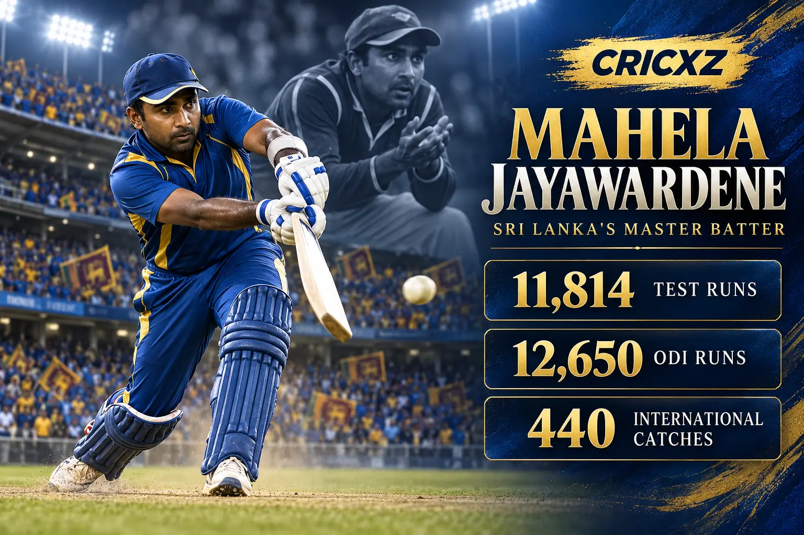
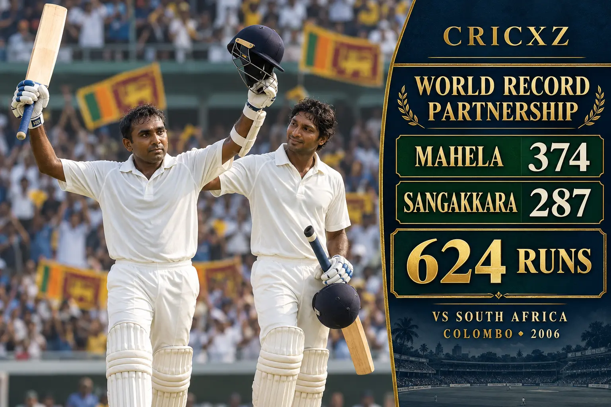

Test Career
- Matches
- 149
- Runs
- 11,814
- Highest score
- 374
- Batting average
- 49.84
- Centuries
- 34
- Fifties
- 50
- Catches
- 205

Mahela Jayawardene scored 11,814 Test runs and 12,650 ODI runs, completing a 25,957-run international career shaped by elegant right-handed batting, leadership and outstanding close catching.
Career statistics are final.
Jayawardene played his final international match in March 2015. The figures above were checked against ICC and established statistical records.
Across 18 years, Jayawardene combined touch, placement and tactical intelligence with exceptional slip fielding. His 25,957 international runs and 440 catches established him as one of Sri Lanka's most influential cricketers.

Jayawardene made 374 against South Africa in Colombo in 2006 and shared 624 runs with Kumar Sangakkara, the highest partnership in first-class cricket. Sri Lanka declared on 756 for five and won by an innings and 153 runs.
Jayawardene made 115 not out in the 2007 World Cup semi-final and 103 not out in the 2011 final, becoming one of the few batters to score a century in a men's World Cup final. He later helped Sri Lanka win the 2014 T20 World Cup.
August 1997 – August 2014
Played 149 Tests, scored 11,814 runs and set a Sri Lanka record with 374 against South Africa.
January 1998 – March 2015
Completed a 448-match ODI career with 12,650 runs, 19 centuries and 218 catches.
June 2006 – May 2014
Scored 1,493 T20I runs and ended his career as a 2014 world champion.
Scored 11,814 Test, 12,650 ODI and 1,493 T20I runs.
Made 34 Test, 19 ODI and one T20I century.
Set Sri Lanka's record and the highest Test score by a right-hander.
Completed a record 440 catches as a non-wicketkeeper.
Shared first-class cricket's highest stand with Kumar Sangakkara.
Made an unbeaten hundred against India in the 2011 final.
Was inducted in recognition of his outstanding international career.
Helped Sri Lanka secure the global T20 title in Bangladesh.
Featured in five men's ICC tournament finals during his career.
Led Sri Lanka to the 2007 ODI World Cup final.
CricXZ is an independent cricket publication and is not affiliated with the ICC, Sri Lanka Cricket or any team.
Read Kumar Sangakkara's career records, explore Muttiah Muralitharan's statistics, or browse all CricXZ player profiles.